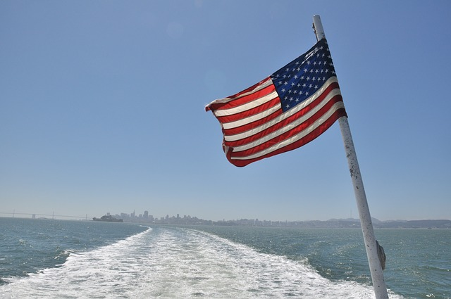
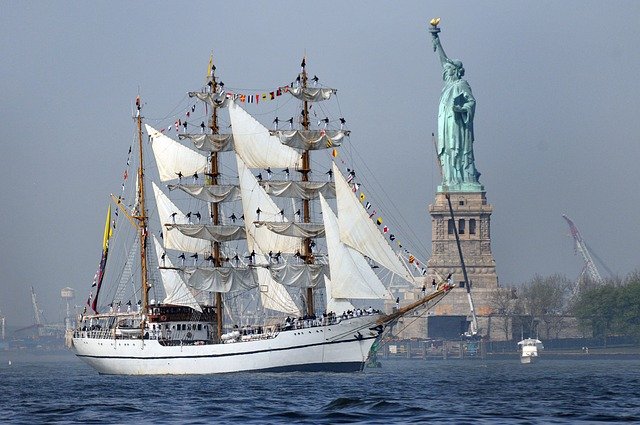
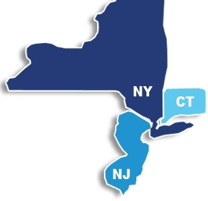
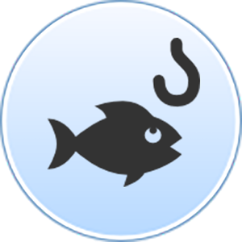

Locations in the Tri-State Area
In eu ultrices neque. Vestibulum non sapien at orci elementum tincidunt. Nunc viverra, dui non feugiat dictum, erat metus fringilla elit, quis blandit lorem sapien sit amet risus. Phasellus dictum augue mi, mollis dignissim nisi rhoncus in. In vel ornare velit. Cras a quam vel est sodales pellentesque quis sit amet est. Aliquam rutrum volutpat quam. Proin non sollicitudin est. Nulla tristique nibh eget urna iaculis, eget placerat justo placerat.
In eu ultrices neque. Vestibulum non sapien at orci elementum tincidunt. Nunc viverra, dui non feugiat dictum, erat metus fringilla elit, quis blandit lorem sapien sit amet risus. Phasellus dictum augue mi, mollis dignissim nisi rhoncus in. In vel ornare velit. Cras a quam vel est sodales pellentesque quis sit amet est. Aliquam rutrum volutpat quam. Proin non sollicitudin est.

Interactive Maps
Each interactive map contains data on a certain topic or theme, including nature, environmental facilities, and minerals. You can use interactive tools to explore the data and create customized maps.
In eu ultrices neque. Vestibulum non sapien at orci elementum tincidunt. Nunc viverra, dui non feugiat dictum, erat metus fringilla elit, quis blandit lorem sapien sit amet risus. Phasellus dictum augue mi, mollis dignissim nisi rhoncus in. In vel ornare velit. Cras a quam vel est sodales pellentesque quis sit amet est. Aliquam rutrum volutpat quam. Proin non sollicitudin est. Nulla tristique nibh eget urna iaculis, eget placerat justo placerat.